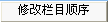

| 顺序 |
栏目在前台/后台栏目列表中的显示顺序值。单击按钮，各栏目按顺序值依次排列，顺序值越小排列越靠前。 |
| . |
栏目收缩展开按钮。 |
| 单击栏目收缩按钮，则只显示根目录下的终极栏目、父栏目（父栏目所在行为蓝色条）。 |
| 单击栏目展开按钮，则显示所有的终极栏目、父栏目及其子栏目。 |
|
图标表示 该栏目为终极栏目。
图标表示 该栏目为非终极栏目（包括父栏目及其子栏目）。 |
| 点击
图标进入增加栏目下的信息。 |
|
ID |
栏目ID值，增加栏目时由系统按顺序依次生成。常用于标签调用中的参数。 |
| 如[ecmsinfo]栏目ID/专题ID,显示条数,标题截取数,是否显示栏目名,操作类型,模板ID,只显示有标题图片[/ecmsinfo]标签。 |
| 栏目名 |
栏目名称。单击栏目名称，如“国内新闻”，则显示该栏目的前台地址网页。 |
| 访问 |
统计该栏目的前台访问次数。 |
| 栏目管理 |
修改：修改栏目。 |
| 复制：复制栏目的参数。 |
| 删除：删除栏目。 |
| 操作 |
刷新：生成该栏目页面。 |
| 信息：生成该栏目的内容页面。 |
| JS：生成该栏目JS调用。 |
| 调用：查看该栏目的实际地址及JS调用地址。 |
| 分类：设置栏目使用的标题分类。 |
| 归档：将不需要的信息归到另一个数据表，以减少主表的数据负担。 |
|